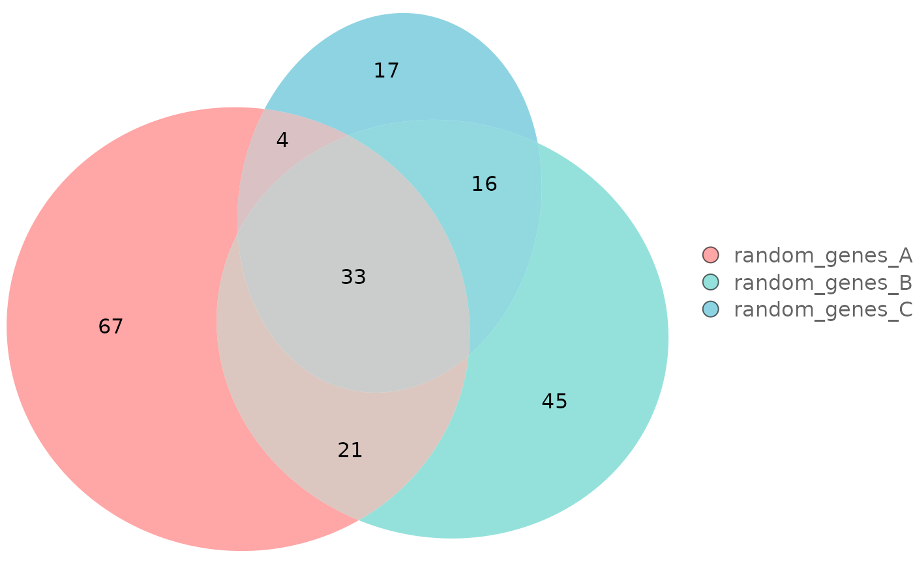
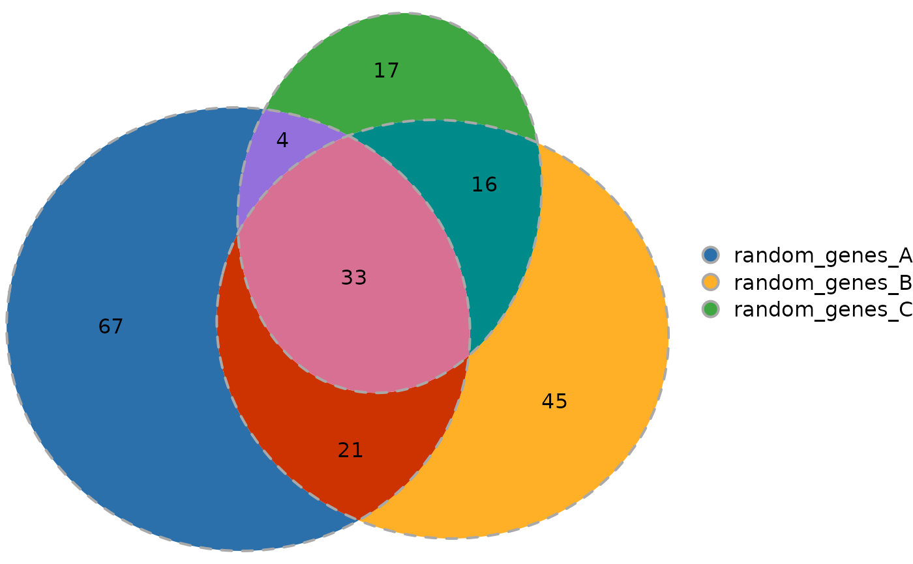
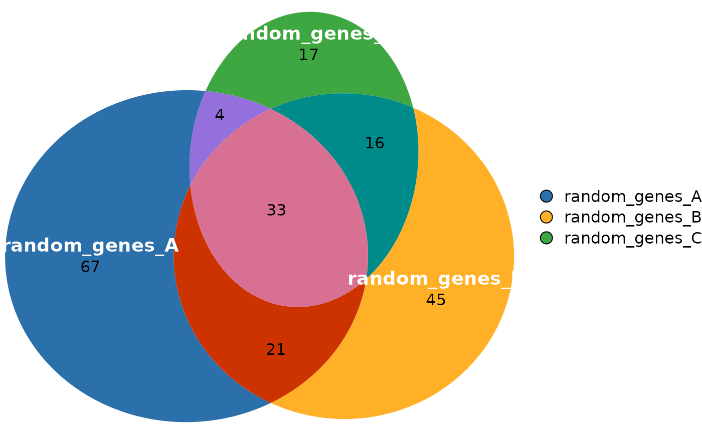
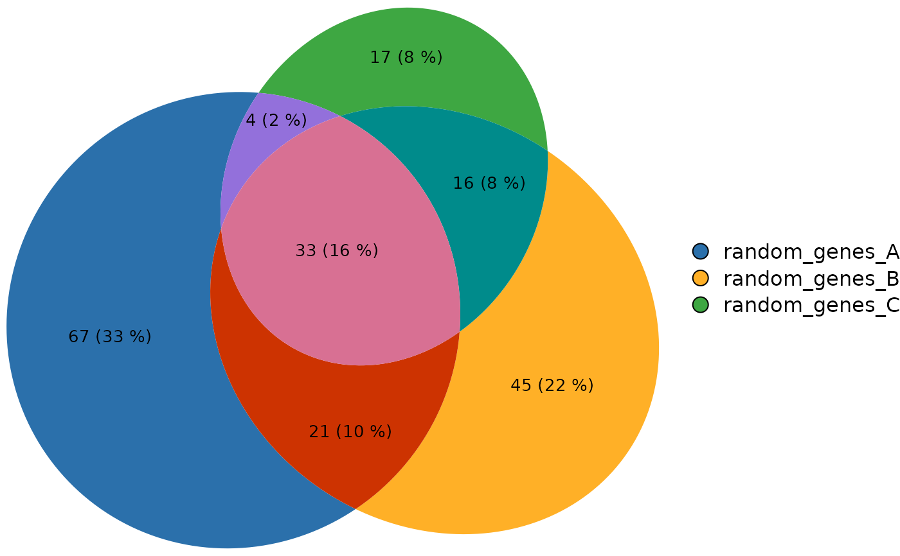
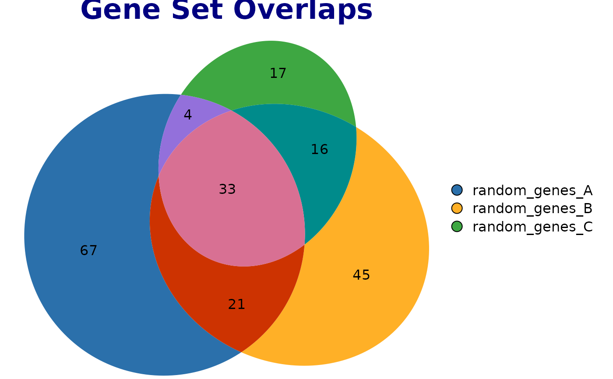
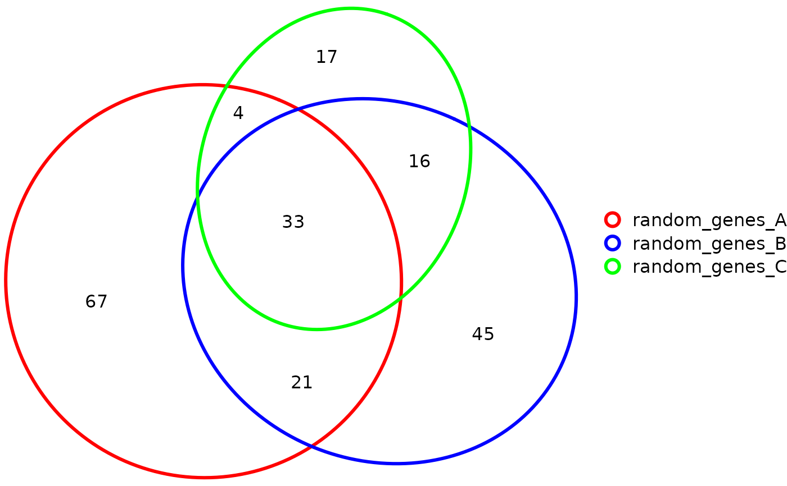
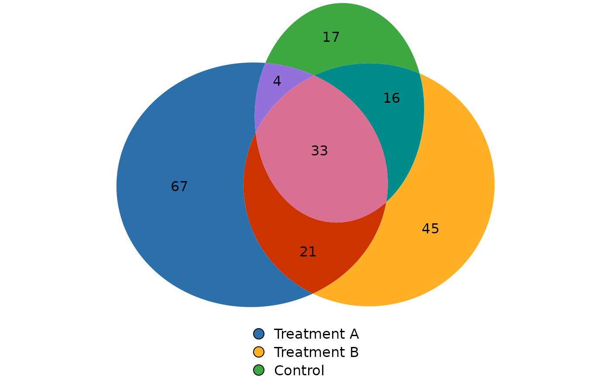

This function creates a Venn diagram using the eulerr package to visualize
intersections across multiple sets. Supports both
GenomicOverlapsResult and SetOverlapsResult objects.
Usage
plotVenn(
overlap_object,
fills = TRUE,
edges = TRUE,
labels = FALSE,
quantities = list(type = "counts"),
legend = "right",
main = NULL,
...
)Arguments
- overlap_object
A
GenomicOverlapsResultorSetOverlapsResultobject returned bycomputeOverlaps.- fills
Controls the fill appearance of the diagram. Can be:
logical:
TRUE(default) shows fills,FALSEhides themcharacter vector: Colors for the fills. Default colors are: c("#2B70AB", "#FFB027", "#3EA742", "#CD3301", "#9370DB", "#008B8B", "#D87093")
list: Fine control with graphical parameters including
fill(colors),alpha(transparency 0-1)
- edges
Controls the edge/border appearance. Can be:
logical:
TRUE(default) shows edges,FALSEhides themcharacter vector: Colors for the edges
list: Fine control with
col(colors),alpha(transparency 0-1),lty(line type),lwd(line width),lex(line expansion)
- labels
Controls set labels. Can be:
logical:
TRUEshows default labels,FALSEhides themcharacter vector: Custom text for labels
list: Fine control with
col(text color),fontsize,font(1=plain, 2=bold, 3=italic, 4=bold italic),fontfamily,cex(character expansion),alpha(transparency 0-1)
- quantities
Controls intersection quantities display. Can be:
logical:
TRUEshows counts,FALSEhides themcharacter vector: Custom text labels
list: Fine control with
type(c("counts", "percent")),col(text color),fontsize,font,fontfamily,cex,alpha
- legend
Controls the legend. Can be:
logical:
FALSEto disablecharacter: Position ("right", "top", "bottom", "left")
list: Fine control with
side(position),labels(custom labels),col,fontsize,cex,fontfamily
- main
Title for the plot. Can be character, expression, or list with
label(text),col,fontsize,font,fontfamily- ...
Additional arguments passed to
plot.euler.
Examples
# Example with gene sets
data(gene_list)
res_sets <- computeOverlaps(gene_list)
# Basic plot
plotVenn(res_sets)
# Customize fills with transparency and custom colors
plotVenn(res_sets,
fills = list(fill = c("#FF6B6B", "#4ECDC4", "#45B7D1"),
alpha = 0.6))

# Customize edges
plotVenn(res_sets,
edges = list(col = "darkgray", lwd = 2, lty = 2))

# Customize labels
plotVenn(res_sets,
labels = list(col = "white", font = 2, fontsize = 14))

# Show both counts and percentages
plotVenn(res_sets,
quantities = list(type = c("counts", "percent"),
col = "black", fontsize = 10))

# Add a title
plotVenn(res_sets,
main = list(label = "Gene Set Overlaps",
col = "navy", fontsize = 16, font = 2))

# Transparent fills with colored borders only
plotVenn(res_sets,
fills = "transparent",
edges = list(col = c("red", "blue", "green"), lwd = 3))

# Custom legend
plotVenn(res_sets,
legend = list(side = "bottom",
labels = c("Treatment A", "Treatment B", "Control"),
fontsize = 12))
